Pelajari caranya di :
Panduan Simpel Mendapatkan Income 5 - 15 Juta ++ / Bulan Hanya Bermodalkan Blog
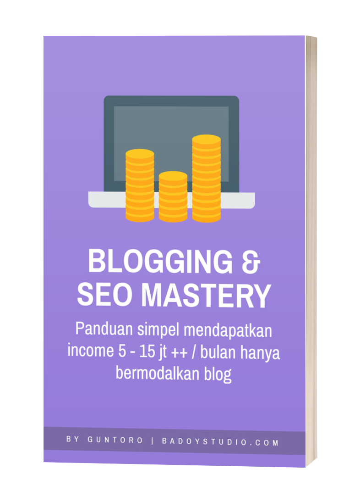
Ingin punya PASSIVE INCOME dari internet?
Ingin punya PASSIVE INCOME dari internet?
Ingin menjadikan penghasilan dari internet menjadi PRIMARY INCOME?
Ingin bekerja dari rumah tapi PUNYA INCOME 5 – 15 JT ++ / setiap bulannya?
Ingin mulai BISNIS ONLINE DAN PROFIT JUTAAN RUPIAH TIAP BULAN tapi tidak tahu caranya?
Ingin membangun PERSONAL BRANDING untuk karir atau bisnis?
ngin mengembangkan bisnis DARI OFFLINE KE ONLINE?
Ingin punya SKILL MAHAL di era informasi seperti ini?
BLOGGING ATAU NGEBLOG adalah salah satu jalan dari semua jawaban di atas.
Di mana hanya dengan membuat blog lalu mengoptimasinya dengan baik, kita bisa mendapatkan income rutin mulai dari 5 – 15 jt ++ setiap bulannya, meningkatkan personal branding untuk karir atau bisnis, mengembangkan bisnis online, dan lain sebagainya.
Ya, serius…
Betul sekali ….
hanya dengan modal BLOG.
SAYA SUDAH MEMBUKTIKANNYA.
Saya sendiri tidak menyangka. Sebelum fokus ngeblog awalnya hanya menghasilkan 1 sampai 5 jutaan saja setiap bulannya dari blog.
Tapi setelah FOKUS NGEBLOG, incomenya semakin naik ke angka 8 juta, 15 juta, sampai 20 juta lebih / bulan. Bahkan 200 JUTA PERTAMA saya ternyata bisa tercapai dengan wasilah fokus NGEBLOG saja. Alhamdulillah.
Tentu saja bukan asal membuat blog lalu langsung mendapatkan penghasilan begitu saja. Ada prosesnya, ada ilmunya, ada strateginya.
Blogging & SEO Mastery adalah ebook yang berisi panduan lengkap bagaimana membuat blog, lalu mengoptimasinya agar mendapatkan ribuan pengunjung setiap harinya, sehingga bisa mendapatkan income 5 – 15 juta ++ /bulan.
Ditulis berdasarkan pengalaman saya sendiri yang kurang lebih sudah 5 tahun menekuni dunia blogging.
Blogger pemula yang masih bingung bagaimana cara optimasi dan memonetisizenya
Digital Marketer yang ingin belajar lebih dalam tentang SEO dan content marketing
Programmer yang ingin melengkapi skill di dunia SEO
Pengajar dan Dosen yang ingin mendapatkan income melalui blog
Pelajar / Mahasiswa yang ingin mendapatkan income dari internet
Pebisnis yang ingin menjangkau konsumen melalui internet dan membangun list building
Karyawan yang ingin mendapatkan passive income dari online
Dan siapapun yang ingin belajar lebih jauh tentang blog, list building, SEO, dan mendapatkan income dari internet
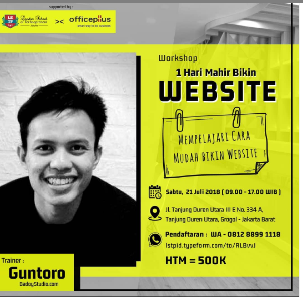
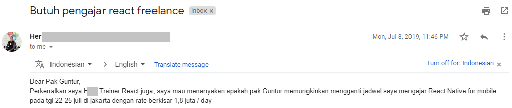
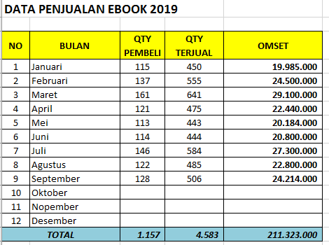
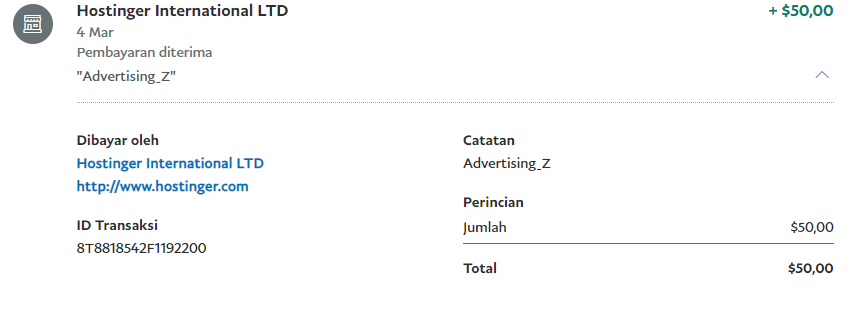
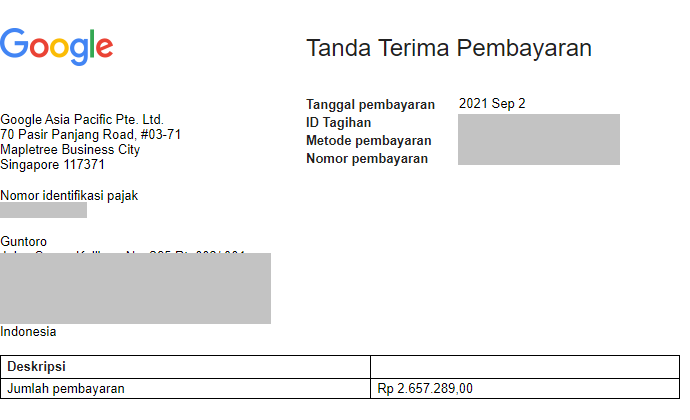
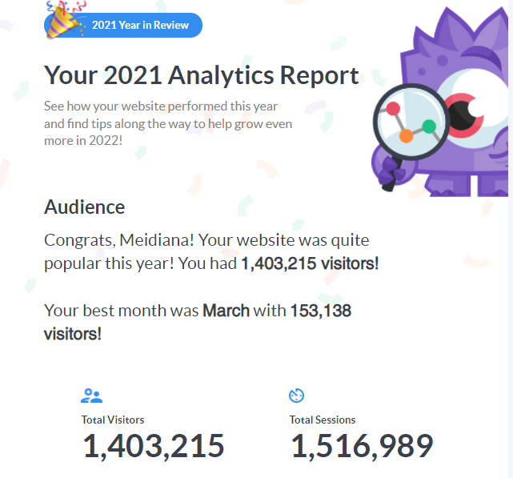
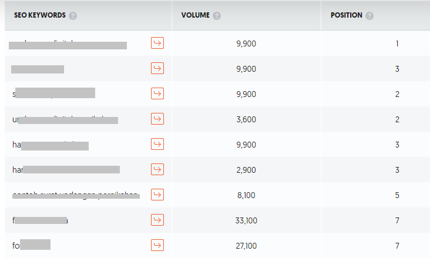
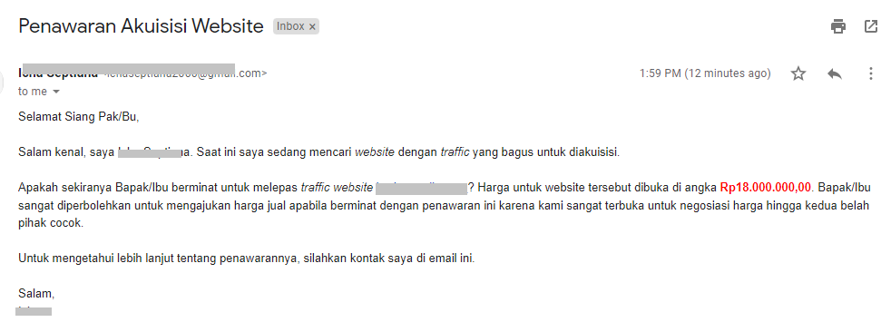
Hai, perkenalkan saya Guntoro, founder dari blog badoystudio.com
Sebelum menulis ebook Blogging & SEO Mastery, saya sudah lebih dulu menerbitkan ebook android studio yang Alhamdulillah sudah dipelajari oleh 2500+ orang dari berbagai kalangan.
Selain itu saya juga merilis kelas online mahir membuat website yaitu Kelas Mastering Website. Saat ini sudah ada 390+ orang yang terdaftar dan belajar.
2017 adalah tahun pertama saya iseng ngeblog, namun ketika saya coba mempelajari, fokus, dan melakukan strategi-strategi digital marketing ternyata blog saya membuahkan hasil dan bisa memberikan income yang sangat banyak bagi saya waktu itu.
2019 saya memutuskan untuk menjadi full time blogger dan freelance di bidang web and mobile development.
Jadi, berbekal pengalaman itu Insya Allah saya akan berbagi bagaimana membangun blog, mengoptimasi SEO, membangun list building, sehingga bisa menghasilkan income kurang lebih 5 – 15 jt ++ setiap bulannya di ebook Blogging & SEO Mastery.
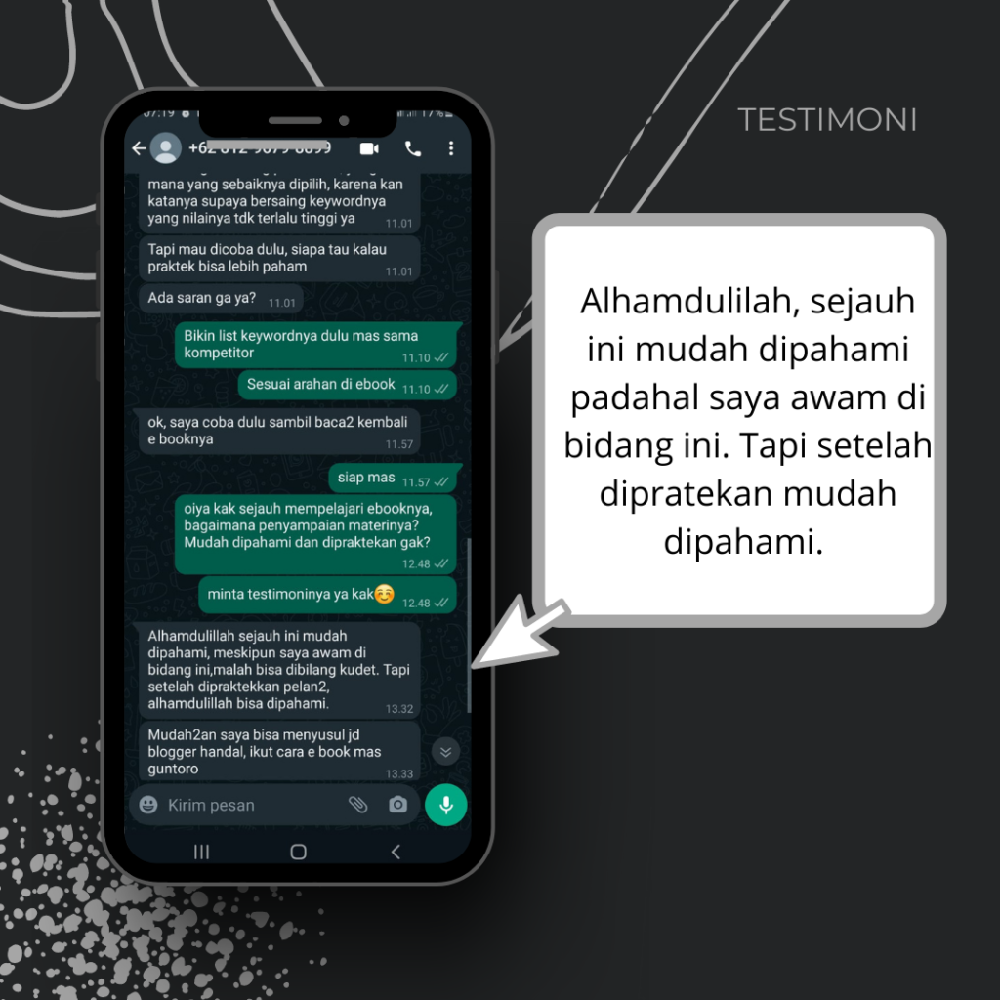
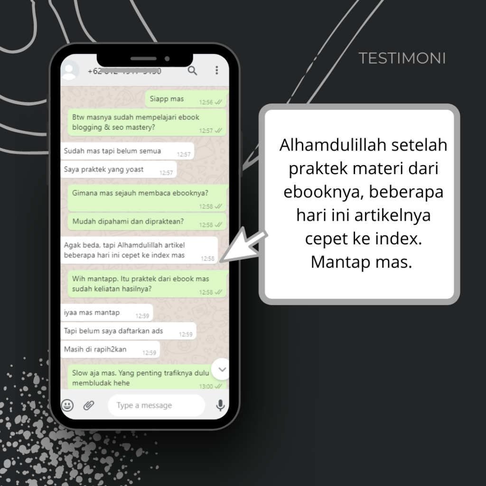
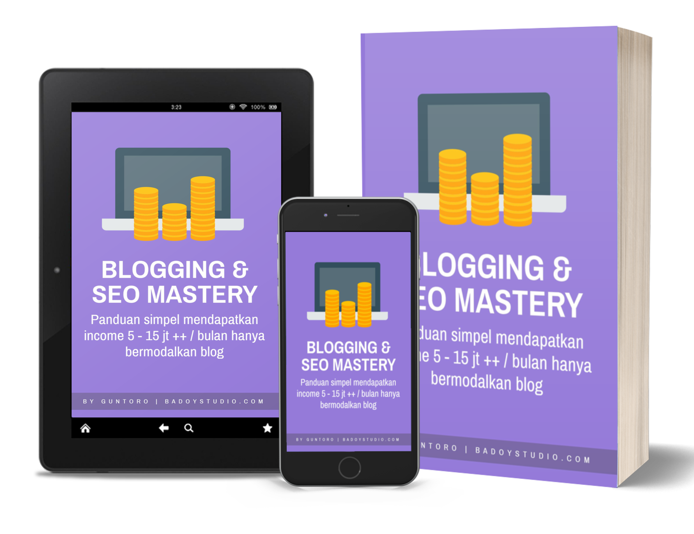
Kamu bisa memiliki ebook tersebut dengan harga sangat terjangkau yaitu, 99 ribu saja.
249 ribu
199 ribu
99 ribu